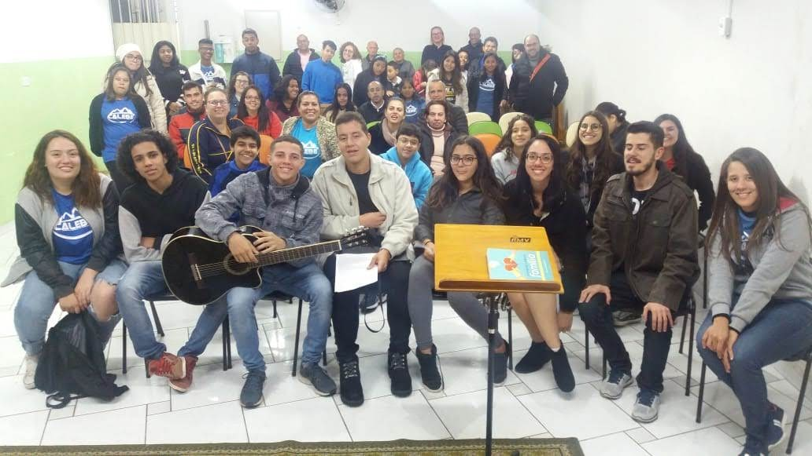
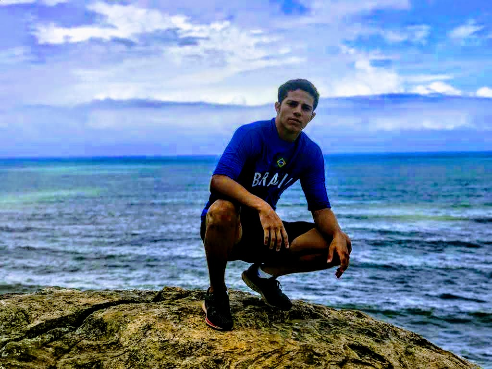
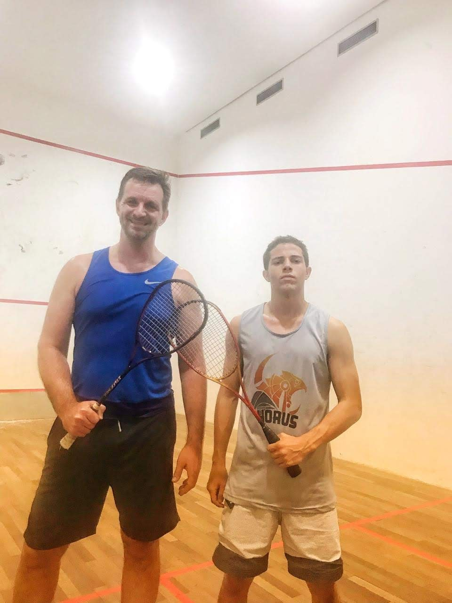
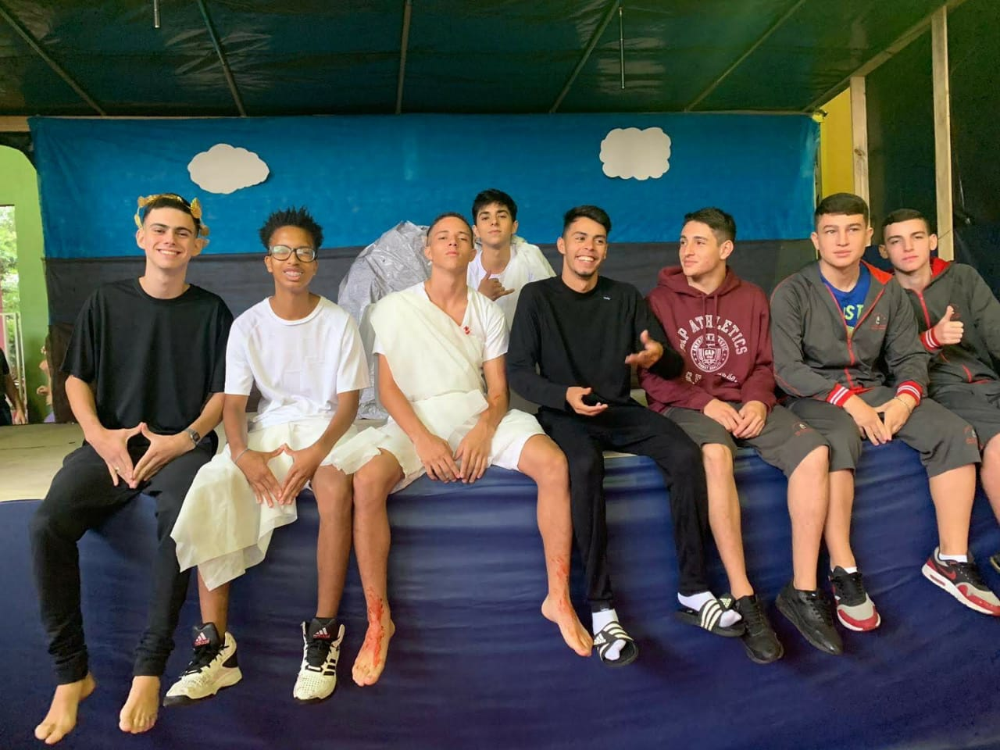
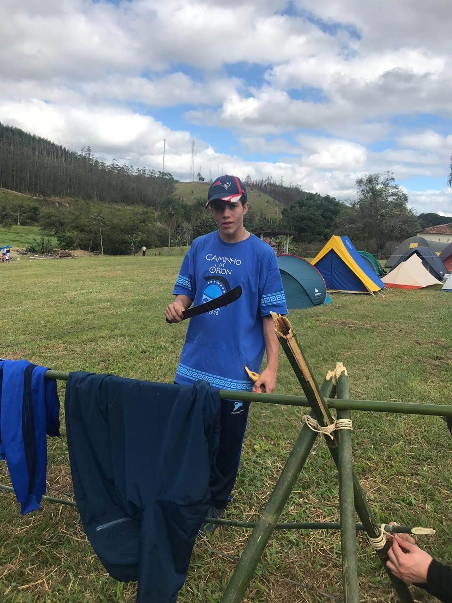
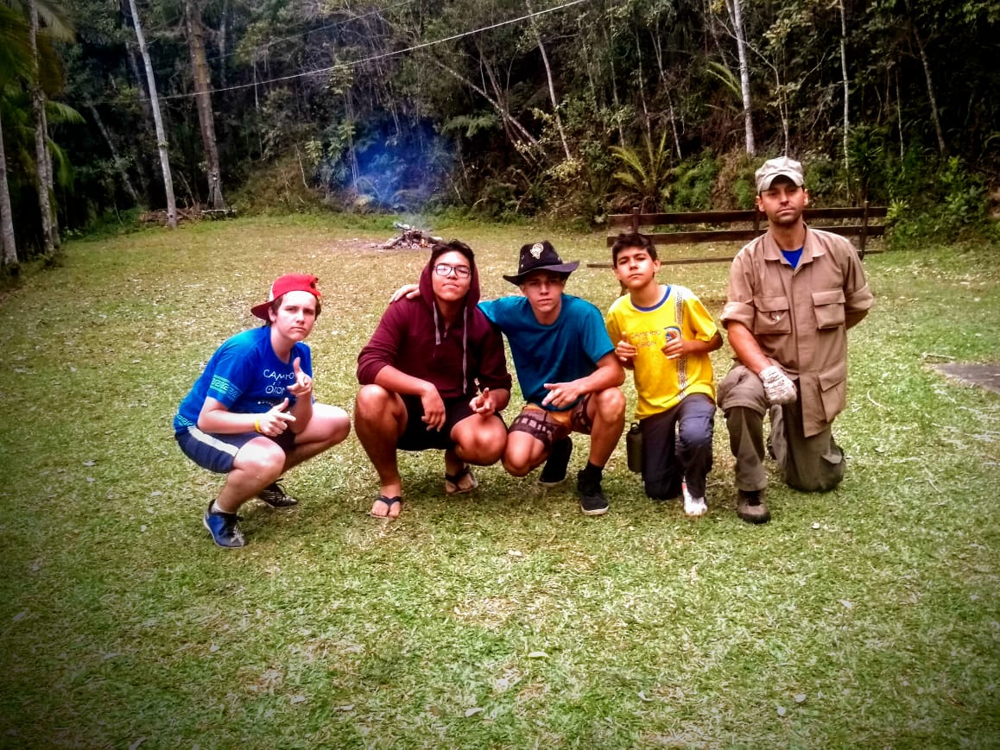
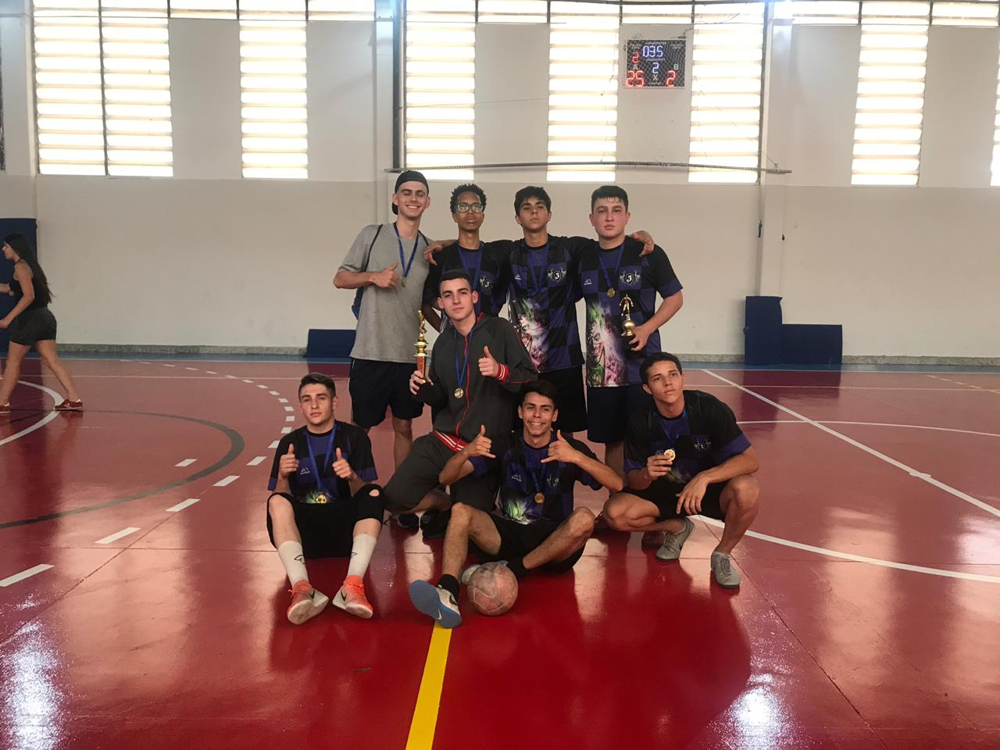
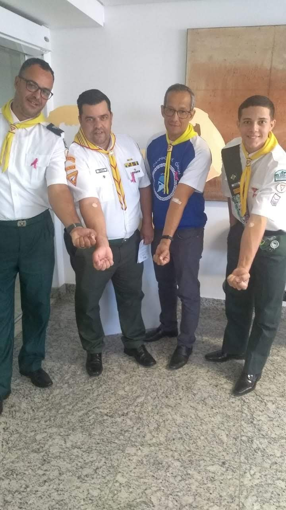
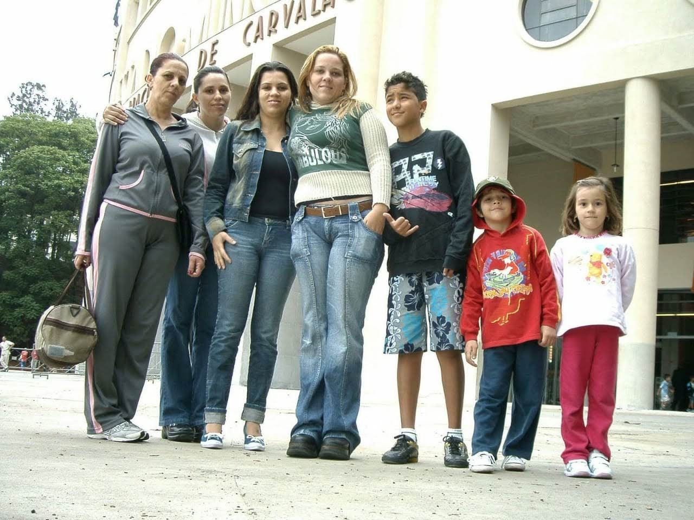

1. O Início
Nasci no dia 14/06/2002 e cresci num pequeno bairro da zona norte da cidade de São Paulo.
Desde cedo demonstrei ter muito interesse por esportes e, devido a minha imperatividade, meu
avô decidiu me levar para fazer um teste numa equipe de ginástica artística no ginásio Bonifácio
Cardoso, onde eu pude começar a praticar um esporte que de hobby passaria a ser um sonho e objetivo.
2. Construindo Princípios
Com 5 anos, acordava cedo 3 vezes por semana para práticar o tão novo e desconhecido esporte.
Como era imperativo, tinha muita dificuldade com disciplina, e isso refletia dentro e fora do
ginásio.
Na ginástica, aprendi a: ter disciplina, a cumprir horários, aprendi que dificuldades são
oportunidades de por à prova sua melhor performance e também consegui agregar valores que
ajudaram na minha formação pessoal
3. Estabelecendo Valores
A minha passagem pelo esporte durou 8 anos, e encerrou quando reconheci que havia alguém
muito maior que eu e o meu amor pelo esporte.
Essa mulher da foto foi quem me fez enxergar isso, e ela é Neuza Maria Ferreira, minha avó, quem
me ensinou onde buscar meus valores e sabedoria.
4. Quem sou eu?
Tenho os gostos mais variados para música, filmes, esportes e aventuras porque gosto de experimentar
e conhecer de tudo um pouco, acredito que fixar-se em apenas uma possibilidade é algo a ser feito
quado não tem a oportunidade de experimentar coisas novas.
Gosto de atribuir e compartilhar novos conhecimentos, eu acredito que os conselhos de quem já passou
por determinado caminho ou experiência podem me ajudar a passar pelo mesmo caminho de uma forma mais
rápida segura e com mais facilidade
Foi justamente por isso, pensei em criar o BandStudents.
Para ajudar a quem está iniciando o caminho da programação a encontrar com maior facilidade
os conteúdos que serão compartilhados através do conhecimento de alunos que trilharam do 0
esse caminho e que sabem das dificuldades de quem inicia.








